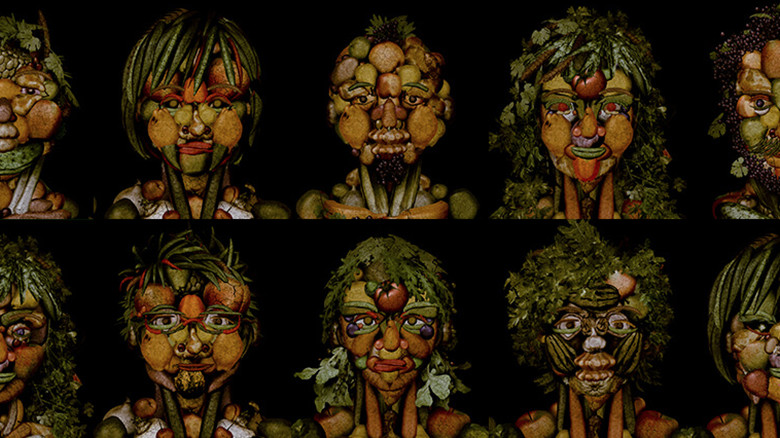

digital

dot by dot inc.
https://dotby.jp/-どんな人
デジタルを軸とした広告・エンターテイメント・ゲーム・建築・ファッションなどの企画制作などを行なっています。
-解説
顔認証を使って自分の顔を野菜にするデジタル作品です。200種類もの野菜や果物の中からパーツに合うモチーフを組み合わせているそうです。 Adgangの記事に詳しくのってます。 あなたの顔が野菜に変身!? 奇才の画家を現代に蘇らせる絵画化インスタレーション： http://adgang.jp/2017/06/146099.html 実際にやってみました。 いんげんヘアーでした。 列に並んでいる時に他の人のを見ていましたが、メガネなど細かい部分もしっかり再現していました。
-好きなところ
好きなところというかいいなと思った部分。 ・顔認証→野菜化の流れがスムーズ ・立つ場所から離れると野菜がすぐ崩れてリセット この二つの点が良かったため、3箇所のモニターで、スタッフなしで行列の人たちにスムーズに対応できてました。 並ぶ人は家族連れなども多く、一箇所に3回撮影する人たちもいたのでこうした導入と終わりの部分がスムーズだと、複雑な人の動きにも対応できるコンテンツになると思いました。 また、撮影時間も20秒間とモニターに表示して決めていて、ひとによって時間にばらつきが生じないような工夫がされていました。 こういうデジタルの展示ものは、人の流れもしっかり考慮する必要性を感じました。